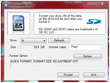
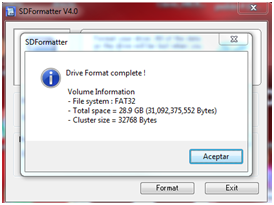
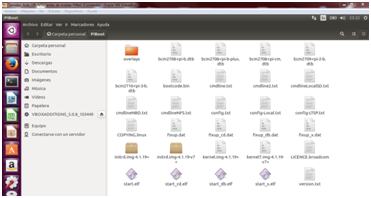
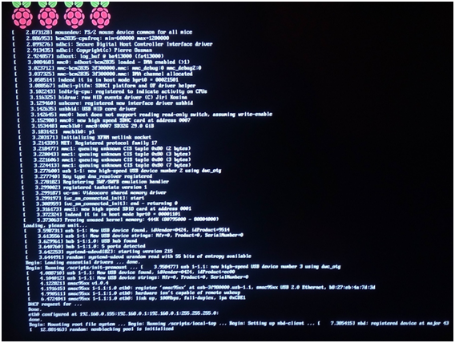
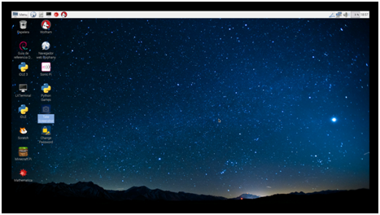

4. Instalación del Sistema en la Rapsberry Pi
Si todo ha ido bien hasta ahora, y confiamos en que sí, ya tenemos preparado nuestro Servidor y podemos pasar a copiar los archivos necesarios en las tarjetas de memoria SD y proceder a unir nuestras Raspberry Pi.
1.- FORMATEO DE LA TARJETA SD.
Deberemos formatear nuestra tarjeta SD (en formato FAT32) para evitar errores. Si usamos Windows recomendamos usar el Programa Gratuito SDFormatter v4.0 que podemos descargar desde:
https://www.sdcard.org/downloads/formatter_4/index.html
Su uso es extremadamente sencillo, se inserta la tarjeta y nos aseguramos que la etiqueta del volumen (la letra) es la correcta en Drive,le ponemos nombre a la unidad (Volume Label) y pulsamos en Format y listo.


Si lo hacemos desde el propio Ubuntu u otro sistema Linux, podemos usar GParted que instalaremos mediante el comando:
sudo apt-get install gparted
Para el resto de los pasos mediante este sistema, os enlazamos el siguiente tutorial online:
https://geekland.eu/formatear-memoria-usb-en-linux/
2.- PASAMOS LOS FICHEROS NECESARIOS A NUESTRA SD:
Para ello vamos en nuestro servidor Ubuntu a la carpeta piBoot (Carpeta personal PiBoot), seleccionamos todos los archivos y los pegamos en la tarjeta SD.

Ahora tan sólo deberemos insertar la SD en nuestra Raspberry Pi y encenderla (mediante el cable de alimentación y todos los cables de periféricos y red conectados).
Si todo ha ido bien, conezará la instalación (es posible que de algún problema de "error de entorno de escritorio" que no deberemos tener muy en cuenta, ya que sólo pasará con usuarios creados en el servidor, no pasará cuando tengamos alumnos creados).

Al cabo de unos minutos (el proceso puede tardar 30 minutos) podremos ver ya nuestra pantalla de Inicio de Raspbian.

Podemos aprovechar para familiarizarnos con el entorno de escritorio de este sistema operativo e incluso usar alguno de los multiples programas que vienen por defecto instalados y que veremos más adelante.
El curso continúa con la Creación de usuarios (alumnos).
*/ TODAS LAS IMÁGENES UTILIZADAS EN EL PRESENTE MÓDULO HAN SIDO ELABORADAS POR EL AUTOR DEL CURSO.

Monta tu aula de informática con Raspberry Pi por Fernando Gasca Andreu bajo licencia Creative Commons Reconocimiento-NoComercial-CompartirIgual 4.0 Internacional License.